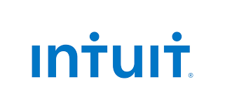

Welcome!
I just finished my second year at King's College London. I'm currently studying Computer Science and enjoying it.
I had a change in my studies and while I think I picked up some nice skills doing Marketing and Human Resources, I can't deny my passion for technology and the proud feeling you get when you produce a piece of efficient, good-written code.
Learning new technologies and languages doesn't scare me. Studying far from home and studying abroad turned me into a curious and adaptive person.
Last update:
I am no longer looking specifically for summer internships, but I am always open to chat about new technologies or Artificial Intelligence applications.
King’s College London, UK
Expected 2019
- MSci Computer Science, 3rd year
Relevant modules: Java, C++, Operating Systems, Introduction to AI, Data Structures, Databases
University of California, Berkeley, USA
2015
- Business Administration Major
Exchange Program, GPA 3.648
University of Bordeaux, Bordeaux, France
2011 to 2014
- Bachelor in Economics and Business Administration, European Economics and Policy
High Honors, GPA 16.185/20
Pierre Lagourgue High School, Tampon, Reunion Island
2007 to 2010
- Scientific Baccalauréat
High Honors, GPA 17.89/20
- French: Mother tongue
- English: Fluent, IELTS 8.0
- Japanese: Intermediate
- Currently learning: Java, Python, C++
- Basics: Javascript, Scala, C#
- Intermediate: HTML/CSS, Java
- OS: Linux Xubuntu
- Python: vim, PyCharm
- C++: vim, shell
- Java: IntelliJ
- Microsoft Office: Word, Excel, PowerPoint
- Graphic: Photoshop CC, Gimp 2.0
June 2017 - September 2017

- Developed the tools used to keep the Global Payroll product conformed to requirements given by countries’ governments
- Adapted those tools to guarantee customers a lawful use of the product and to ensure its non-regression
- Worked within a team following Scrum methodology
- Helped the team deliver new features to improve customers’ use of the product
- Optimised existing code base: module extraction towards micro-services, added static analysis tools, improved integration tests run time
- Added tests (unit, integration, functional): improved code coverage by 15%
- Technologies: Java, Groovy with Spock, mysql, GraphQL
- Participated in definition phase of Dubai Holdings and Galeries Lafayette projects
- Made different POC involving Augmented Reality
- Studied and implemented different AR technologies (Vuforia, Wikitude, Zappar)
- Started to test out the Microsoft Hololens
- Languages: HTML, CSS, Sass, Javascript, Node.js, C# (Unity), Java (Android)
- Libraries: lodash (underscore)
- Softwares: Unity with Vuforia plugin, Blender, Visual Studio, PhotoScan
- Optimised existing SquareSpace website
- Increased pages load time by 2s on average
- Implemented form autocompletion with Facebook sign up
- Installed Node.js server to work locally on website
- Implemented social networks share buttons to blog articles
- Wrote auto-executive scripts in Javascript for Google Adwords
- Increased number of clicks by 50%
- Technologies: SquareSpace, CSS, Javascript, Node.js
May 2014 – July 2014
- Set-up a market analysis to enable the company to enter Paris market
- Participated in orchestrating international events for 600 scientists and researchers
- Managed databases of potential customers: researchers , scientists and public laboratories
- Wrote service specifications: events organization, dinners, excursions, goodies, fees, etc
- Established a mailing model for the company and used it to make over 1,000 name badges
June 2012
- Familiarized with the accountant job by interviewing the employees and observing their daily tasks